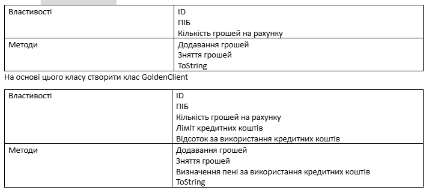
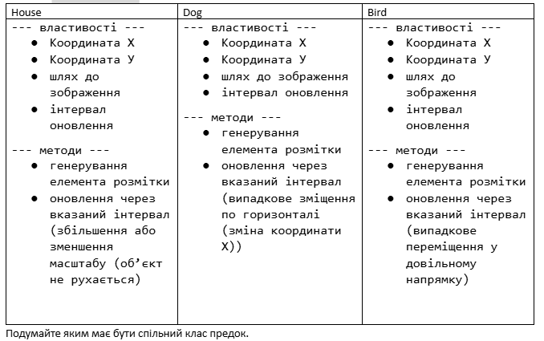

Домашнє завдання №21
-
Задача №1
Розробити клас Person (поля:ім'я, вік, адреса; методи: toString, визначення року народження). На основі класу Person розробити клас Worker (додати поля: посада, розмір заробітної плати, кількість відсотів оподаткування; методи:визначення кількості виплачених коштів за рік, та визначення розміру податків).
-
Задача №2
Створити клас Client.
 -
Задача №3
Створити клас Bank, у якому зберігається масив клієнтів. Виконати такі операції Вивести всіх простих клієнтів; Вивести всіх клієнтів GoldenClient; Знайти сумарну кількість грошей на рахунку;
-
Задача №4
Розробити Класи.
 -
Задача №5
Користувач задає місяць навчання учня (перевіряти чи є числом, чи від 1 до 12, чи не канікули) та оцінку (перевіряти чи є числом, чи від 1 до 100). Вивести чи зможе він виправити оцінку (якщо оцінка погана і це не останній місяць у семестрі) . Обробку усіх помилок зробити з використанням відповідних класів.